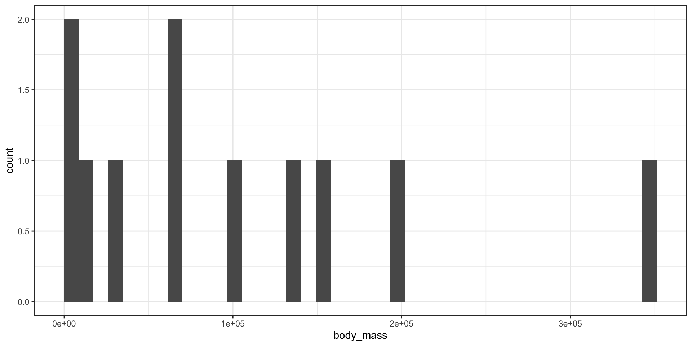
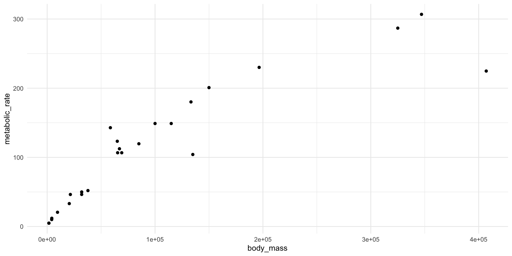
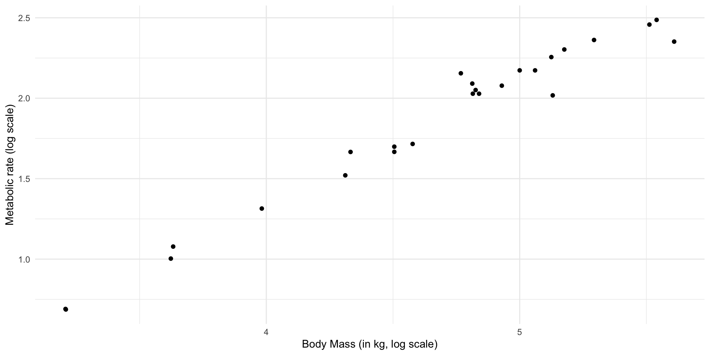
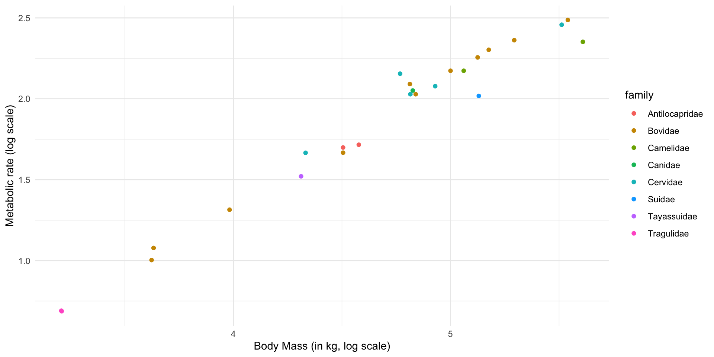
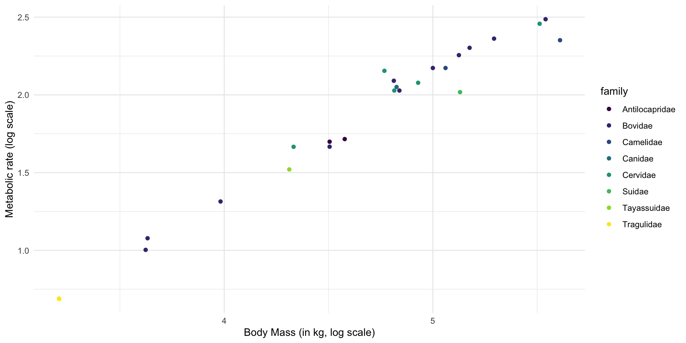

Rename the activity file Lab5.Rmd as lastname-lab5.Rmd.
Follow along and include code in their respective chunks.
Knit often!
Knit your final document into a PDF using the button above this text editor and upload the PDF into Moodle.
Start working on your coding project (instructions on Moodle).
Goals
Critical thinking
Coding
R
markdown
Data wrangling
Visualization and stats
Writing and communication
will be some of the most transferable you acquire as an undergraduate.
Last lab: R markdown
Allowing you to use R markdown for all labs moving forward.
Giving you a transferable skill: markdown exists outside of R and is immensely useful for formatting text across platforms.
Reproducible Documents
Using materials from:
Schweinberger, Martin. 2026. The Language Technology and Data Analysis Laboratory (LADAL). Brisbane: The University of Queensland, School of Languages and Cultures. url: https://ladal.edu.au/ (Version 2026.02.09).
What Are Reproducible Notebooks?
A notebook (R Markdown .Rmd file or Quarto .qmd file) combines three things in one document:
Prose — written in Markdown for formatted text, headings, and lists
Code — in executable code chunks that R runs when the document is rendered
Output — tables, figures, and printed results generated directly from the code
Why Notebooks Matter for Reproducibility
every result derived directly from code
no manual copying of numbers from a statistical output into a word document
This means:
f you update your data, you re-render and all results update automatically
If a collaborator wants to verify a result, they open the notebook and render it
If you revisit the analysis a year later, the notebook shows exactly what was done and why
Use sessionInfo()
At the end of a .Rmd or .qmd or even just an .R script, add sessionInfo()
Ex.1) Make sure ggplot2 and dplyr are installed. The easiest way is to just use the tidyverse package, which installs those two and more for you.
# Install the tidyverse packages here:# install.packages('tidyverse') or# install.packages('dplyr') install.packages('ggplot2)# After you do this, you can comment the line so it doesn't# re-install this every time you knit your document.# Then, load the tidyverse package here:library(tidyverse)# or, if you prefer, library(ggplot2) library(dplyr)
# type your code here this function is from the tibble# package, which is part of the tidyverse packagesis_tibble(mass_metabolism)
[1] TRUE
Ex 8
Have a feel for the data structure. Remember from lab 3 that there are two very useful functions you can use here (str and dplyr::glimpse()). What are the classes of each variable in mass_metabolism? What are the data types of each of the variables? Do you think they make sense?
# type your code here structure:str(mass_metabolism)
Answer: body mass: double (numeric); metabolic rate: double (numeric); family: chr. Doesn’t make much sense to have family as character. Factor would be more useful.
Ex 9
convert the family column into the factor data type and assign that new tibble to mass_metabolism2. - Use mutate. - What are the levels of the variable family? in mass_metabolism2?
# type your code here mutate family into factormass_metabolism2 <- mass_metabolism |>mutate(family =factor(family))# list the levels in this columnlevels(mass_metabolism2$family)
Obtain a summary of each variable (column) in mass_metabolism and mass_metabolism2. What is the main difference between the output provided for each variable and why? Pick your favorite and remove the other with remove().
# type your code heresummary(mass_metabolism)
body_mass metabolic_rate family
Min. : 1613 Min. : 4.865 Length :25
1st Qu.: 21500 1st Qu.: 46.347 N.unique : 8
Median : 65320 Median :106.670 N.blank : 0
Mean : 99358 Mean :112.935 Min.nchar: 6
3rd Qu.:133300 3rd Qu.:148.949 Max.nchar:14
Max. :407000 Max. :306.770
summary(mass_metabolism2)
body_mass metabolic_rate family
Min. : 1613 Min. : 4.865 Bovidae :11
1st Qu.: 21500 1st Qu.: 46.347 Cervidae : 5
Median : 65320 Median :106.670 Antilocapridae: 2
Mean : 99358 Mean :112.935 Camelidae : 2
3rd Qu.:133300 3rd Qu.:148.949 Tragulidae : 2
Max. :407000 Max. :306.770 Canidae : 1
(Other) : 2
remove(mass_metabolism)
Answer: For the family variable, the summary in mass_metabolism is meaningless because it is being treated as character; for mass_metabolism2 it is much more informative, as we obtain the frequencies of each category.
Ex.11
Are there missing data in the dataset? Refer to the previous lab for this one.
# type your code here surrounding is. na(mass_metabolism2)# with table() summarises the number of TRUE and FALSE# outputs.table(is.na(mass_metabolism2))
FALSE
75
Answer: apparently not (sigh of relief)
Ex.12
Explore the variable body_mass: what is the range of the values?
first, make an object called range_mass where you store the range of observed values for body_mass in the entire dataset.
then, using group_by and summarise, get the minimum and maximum values of range mass for each family. Assign this to an object called range_mass_family.
now, add a new column to range_mass_family that contains the difference between the min and max values you calculated for each family. Call this column diff_range.
arrange range_mass by descending values of diff_range.
Does it look like the Bovidae individuals are the ones making the range in body mass so huge?
In steps
Creating range_mass in three different ways:
# creating range_mass in three different ways: 1range_mass <-range(mass_metabolism2$body_mass)# 2range_mass <-c(min =min(mass_metabolism2$body_mass), max =max(mass_metabolism2$body_mass))# 3range_mass <- mass_metabolism2 |>summarise(max =max(body_mass), min =min(body_mass))# the range diff:range_mass[1] - range_mass[2]
max
1 405387
In steps
# Now range_mass_familyrange_mass_family <- mass_metabolism2 |>group_by(family) |>summarise(min =min(body_mass), max =max(body_mass))# adding new columnrange_mass_family <- range_mass_family |>mutate(diff = max - min) |>arrange(desc(diff))range_mass_family
Make a plot for body mass for members of the Bovidae family only. What type of plot would work best for this data? What does this distribution look like? Use the filter function, then use ggplot2!
mass_metabolism2 |>filter(family =="Bovidae") |>ggplot(aes(x = body_mass)) +geom_histogram(bins =40) +theme_bw() #this theme makes the plot look a bit cleaner

Ex 14
Using the entire data set, make a plot of metabolic rate vs. body mass. Which variable should be the response variable and which should be the explanatory variable?
# type your code hereggplot(mass_metabolism2, aes(x = body_mass, y = metabolic_rate)) +geom_point() +theme_minimal()

Ex 15
Make a plot of body mass vs. metabolic rate using a log scale (base 10).
# type your code hereggplot(mass_metabolism2, aes(x =log10(body_mass), y =log10(metabolic_rate))) +geom_point() +ylab("Metabolic rate (log scale)") +xlab("Body Mass (in kg, log scale)") +theme_minimal() #remove ugly gray background

Ex 16
Use different colored points for the different families.
# type your code hereggplot(mass_metabolism2, aes(x =log10(body_mass), y =log10(metabolic_rate),color = family)) +geom_point() +ylab("Metabolic rate (log scale)") +xlab("Body Mass (in kg, log scale)") +theme_minimal()

Ex 17
Change the default colors to some other palette. For example, to use colors similar to the ones I am using in class slides, you can use the color palette called “viridis”. For that, load the package viridisLite. Then, change your previous plot to include the line scale_color_manual(values = viridisLite::viridis(n = 8)). This tells ggplot to ignore default colors and use the 8 colors from the palette “viridis” instead.
# your code here# load package viridisLitelibrary(viridisLite)ggplot(mass_metabolism2, aes(x =log10(body_mass), y =log10(metabolic_rate),color = family)) +geom_point() +scale_color_manual(values = viridisLite::viridis(n =8)) +ylab("Metabolic rate (log scale)") +xlab("Body Mass (in kg, log scale)") +theme_minimal()

Note about color palettes
There are many other ways to change color, either providing each individual color or using a palette as we did above. I recommend checking out packages like cols4all, viridisLite, ggthemes, and others.
Ex 18
Refer to Ex5-Ex8 and repeat the steps here for the dataset SleepInMammals.csv. Call the object in R sleep_mammals. Comment your steps! How many variables are there and what are their types? What are the dimensions of the dataset?
# your code heresleep_mammals <-read_csv("datasets/SleepInMammals.csv")
head(sleep_mammals) #one option is head()
# A tibble: 6 × 12
Species ji Body_Weight_kg Brain_Weight_g Slow_wave_sleep_hrs_…¹
<chr> <chr> <dbl> <dbl> <dbl>
1 African elephant elep… 6654 5712 -999
2 African giant pouc… rat 1 6.6 6.3
3 Asian elephant elep… 2547 4603 2.1
4 Baboon elep… 10.6 180. 9.1
5 Big brown bat bat 0.023 0.3 15.8
6 Brazilian tapir boar 160 169 5.2
# ℹ abbreviated name: ¹Slow_wave_sleep_hrs_per_day
# ℹ 7 more variables: Paradoxical_sleep_hrs_per_day <dbl>,
# Total_sleep_hrs_per_day <dbl>, life_span_years <dbl>,
# gestation_time_days <dbl>, predation_index <dbl>,
# sleep_exposure_index <dbl>, overall_danger_index <dbl>
# but note that because read_csv reads in a tibble, you can# also just typesleep_mammals # this only works as expected for tibbles.
heck the structure of the sleep_mammals object. Do you agree with the data types? If you see reason to change any of them, do that here. Save new object as sleep_mammals2. Then, run summary() on the new dataset.
# species should be a factor.sleep_mammals2 <- sleep_mammals |>mutate(Species =factor(Species))summary(sleep_mammals2)
Species ji Body_Weight_kg
African elephant : 1 Length :41 Min. : 0.005
African giant pouched rat: 1 N.unique :22 1st Qu.: 0.280
Asian elephant : 1 N.blank : 0 Median : 2.500
Baboon : 1 Min.nchar: 3 Mean : 265.459
Big brown bat : 1 Max.nchar: 8 3rd Qu.: 27.660
Brazilian tapir : 1 Max. :6654.000
(Other) :35
Brain_Weight_g Slow_wave_sleep_hrs_per_day Paradoxical_sleep_hrs_per_day
Min. : 0.14 Min. :-999.00 Min. :-999.00
1st Qu.: 3.50 1st Qu.: 6.30 1st Qu.: 0.90
Median : 12.10 Median : 8.60 Median : 1.80
Mean : 362.52 Mean : -15.67 Mean : -22.45
3rd Qu.: 175.00 3rd Qu.: 11.00 3rd Qu.: 2.40
Max. :5712.00 Max. : 17.90 Max. : 6.60
Total_sleep_hrs_per_day life_span_years gestation_time_days predation_index
Min. : 2.90 Min. : 2.00 Min. : 12.0 Min. :1.000
1st Qu.: 8.20 1st Qu.: 5.00 1st Qu.: 31.0 1st Qu.:2.000
Median : 9.80 Median : 13.00 Median : 68.0 Median :3.000
Mean :10.69 Mean : 20.47 Mean :137.9 Mean :2.976
3rd Qu.:13.70 3rd Qu.: 28.00 3rd Qu.:180.0 3rd Qu.:4.000
Max. :19.90 Max. :100.00 Max. :645.0 Max. :5.000
sleep_exposure_index overall_danger_index
Min. :1.000 Min. :1.000
1st Qu.:1.000 1st Qu.:1.000
Median :2.000 Median :3.000
Mean :2.439 Mean :2.707
3rd Qu.:4.000 3rd Qu.:4.000
Max. :5.000 Max. :5.000
Ex 20 (challenge)
Are there any missing data points? If so, in what columns and how many per column? You were told to look at the info on the dataset at: https://lib.stat.cmu.edu/datasets/sleep, and then look for missing data in the columns Slow_wave_sleep_hrs_per_day and Paradoxical_sleep_hrs_per_day. Once you find them, you should replace them with NAs using command gsub().
# replace with NAstemp <-gsub(-999, NA, sleep_mammals$Paradoxical_sleep_hrs_per_day)# this converts the vector to chr, unfortunately, so this# is better:temp <-as.numeric(gsub(-999, NA, sleep_mammals$Paradoxical_sleep_hrs_per_day))# now the other column:temp2 <-as.numeric(gsub(-999, NA, sleep_mammals$Slow_wave_sleep_hrs_per_day))# now use mutate to replace old values with thesesleep_mammals3 <- sleep_mammals2 |>mutate(Paradoxical_sleep_hrs_per_day = temp, Slow_wave_sleep_hrs_per_day = temp2)# check that this now has 2 NAstable(is.na(sleep_mammals3))
FALSE TRUE
490 2
Ex 20 (a simpler alternative)
Tell read_csv what patterns should be read in as NAs:
read_csv(na =c("", "NA")) # default values for argument 'na'